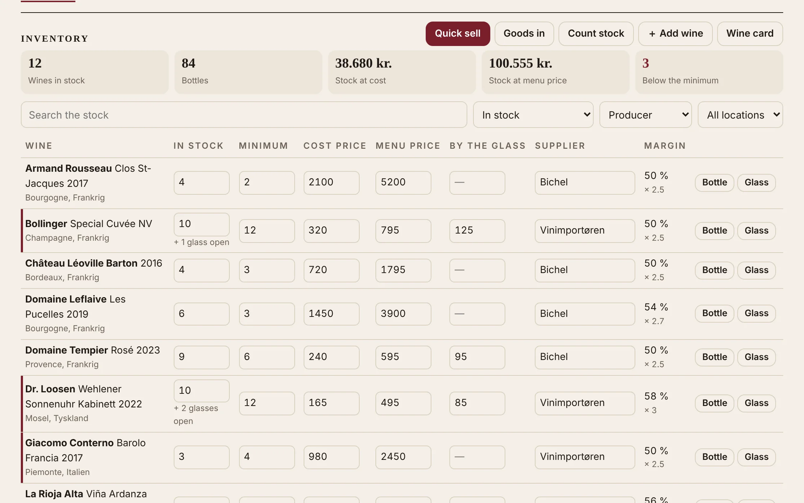

Your wine, from the cellar to the glass, in one place
For restaurants and wine bars, wine merchants and winemakers: the stock you count and sell from, the sales and margins by period, and a wine card that keeps itself up to date, online with a QR code.

What you get
Choose your kind of business:
An inventory to work from
Every wine as a line: stock, minimum, cost and selling price, supplier and margin, edited in place. Search, filter by location or what's running low.
Quick sell, by the bottle or the glass
A till for service: a few letters find the wine, one tap sells a bottle or a glass. The open bottle's glasses are counted for you.
Sell in a tap
Record a sale from the inventory or the quick-sell screen; the stock follows, and a mistake is undone with one click.
Sales and accounts
Takings with and without VAT, gross profit and margin, best sellers and slow movers, for a week, a month or a year; the month as a CSV for your bookkeeping.
A wine card that writes itself
Print it or put it online behind a QR code on the table: it shows what's in stock at today's prices, with the price by the glass.
A price list that writes itself
Print it or share it online with a QR code: in stock and priced only, with the bottles left.
Your own wines by vintage
Name your domaine and see your wines vintage by vintage, with a cellar-door price list online.
Reorder, by supplier
Set a minimum per wine; what's below it is listed by supplier, ready to email or print as an order.
Stock by location
Bar fridge, cellar, shelf 3: see what's where, and what it's worth at cost.
Knowledge for your staff
Each wine's style at a glance, serving temperature, glass and decanting, food matches, and a sommelier to ask, in four languages.
Private by design
Your figures are encrypted in your browser: we can't read them. Export everything at any time.
Take the tour
Real screens from a made-up wine bar. It plays by itself; click a step, swipe, or use the arrow keys.
Prices
A price for your business, everything included: tell us what you need and we'll make you an offer. No set-up fee, no binding, and your data is always yours to take with you.
Private cellar
- The cellar, the journal and the wishlist
- The sommelier and the wine atlas
- Encrypted, exportable
Restaurant or wine bar
- Inventory and quick sell, by the bottle and the glass
- Sales and accounts, the month's CSV
- The wine card, printed and online with QR
- Reorder lists and orders by supplier
Wine merchant
- Inventory and sales
- Sales and accounts, the month's CSV
- The price list, printed and online with QR
- Reorder lists and orders by supplier
Winemaker
- Your own wines by vintage
- Cellar-door sales and accounts
- The price list, printed and online with QR
- Stock by location
Business accounts open soon. Write to us with a word about your business, and we'll send you a price and set your account up.
Questions
Who can see our figures?
Only you. The stock, the prices and the sales are encrypted in your browser before they are saved, with a key only you hold; AllWine and Google, where they are stored, can't read them. The privacy page explains the one exception, account help.
Can we bring our current list?
Yes: import a spreadsheet (Excel, CSV or text) and AllWine tidies the spellings and finds the duplicates. Prices and stock come along.
Does it replace our till?
No: it keeps track of the wine. Record the sales of wine in it (quick sell takes seconds) and you get stock, margins and reorder lists without counting by hand.
Several people, several devices?
One account works on any number of phones, tablets and computers; each picks up the latest changes when it's opened or refreshed.
Which languages?
Danish, English, French and German, chosen with the flags at the top.